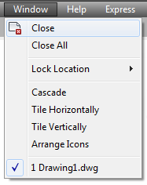

Autodesk AutoCAD 2021: ActiveX Developer's Guide > Customize Toolbars and Menus > About Creating and Editing Pull-Down and Shortcut Menus (VBA/ActiveX) >
To add a new menu item to a menu, use the AddMenuItem method. This method creates a new PopupMenuItem object and adds it to the designated menu.
The AddMenuItem method takes four parameters as input: Index, Label, Tag, and Macro.
The Index parameter is an integer that specifies the position of the new menu item within the menu. The index begins with position zero (0) as the first position on the menu after the title. To add the new menu item to the end of a menu, set the Index parameter equal to the Count property of the menu. (The Count property of the menu represents the total number of menu items on that menu.)

The first index position is zero (0) and the separators are listed as individual menu items with their own index position. The Count property for the menu pictured would be six (6). To add a menu item between Tile Horizontally and Tile Vertically, set the Index parameter to two (2), which is the index of the Tile Vertically menu item. This inserts your new menu item into index two (2) and bumps all the remaining menu items down one index position.
Once a menu item has been created, you cannot change the index of the menu item through the Index property. To change the index of an existing menu item you must delete and re-add the menu item to a different position, or add or delete surrounding menu items until a proper placement is achieved.
A label is a string that defines the content and formatting of menu items. Menu item labels can contain DIESEL string expressions that conditionally alter the labels each time they are displayed.
In addition to the DIESEL string expressions, the label may contain special codes. For example, an ampersand (&) placed directly before a character specifies that character as the accelerator key.
The text the user sees displayed for the menu item is called the Caption, and it is derived from the label by interpreting all the DIESEL string expressions and special codes contained in the label. For example, the label “&Edit” produces the caption “Edit.”
Once a menu item has been created, you can change the label for the menu item using the Label property.
The tag, or name tag, is a string consisting of alphanumeric and underscore (_) characters. This string uniquely identifies the menu item within a given menu.
Once a menu item has been created, you can change the tag for the menu item using the TagString property.
A macro is a series of commands that executes specific actions when a menu item is selected. Menu macros can simply be recordings of keystrokes that accomplish a task, or they can be a complex combination of commands, AutoLISP, DIESEL, or ActiveX programming code.
Once a menu item has been created, you can change the macro for the menu item using the Macro property.
This example creates a new menu called “TestMenu” and inserts a menu item. The menu item is given the name “Open,” and the macro assigned to the menu item is the OPEN command.
Sub Ch6_AddAMenuItem()
Dim currMenuGroup As AcadMenuGroup
Set currMenuGroup = ThisDrawing.Application.MenuGroups.Item(0)
' Create the new menu
Dim newMenu As AcadPopupMenu
Set newMenu = currMenuGroup.Menus.Add("TestMenu")
' Add a menu item to the new menu
Dim newMenuItem As AcadPopupMenuItem
Dim openMacro As String
' Assign the macro the VBA equivalent of "ESC ESC _open "
openMacro = Chr(3) + Chr(3) + "_open "
Set newMenuItem = newMenu.AddMenuItem _
(newMenu.count + 1, "Open", openMacro)
' Display the menu on the menu bar
newMenu.InsertInMenuBar _
(ThisDrawing.Application.menuBar.count + 1)
End Sub